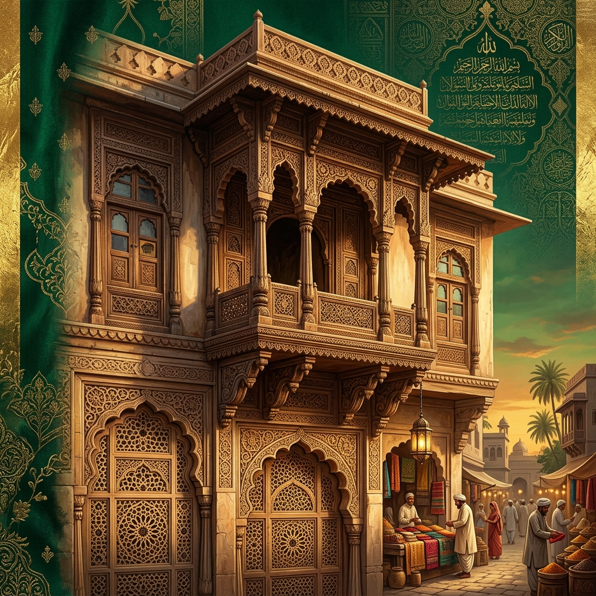

An interactive chronicle documenting the history, distinct regional subgroups, linguistic heritage, and global diaspora networks of a prominent Hanafi Sunni community.

Fatimid-Musta'li missionaries arrived from Egypt and Yemen, converting local Hindu agrarian and mercantile castes to Islam, establishing the roots of the Bohra community.
During this period, Gujarat's bustling ports, such as Cambay (Khambhat), were critical links in the Indian Ocean trade. Missionaries (Da'is) like Maulai Abdullah and Maulai Nuruddin preached Ismaili Shia doctrines. The local coverts, primarily consisting of agriculturalists and traders, adopted the term "Bohra" (derived from the Gujarati word *vohorvu*, meaning "to trade").
Under governor Zafar Khan (later Sultan Muzaffar Shah I), Hanafi Sunni scholars from Delhi gained patronage. The missionary Jafar Patani initiated a conversion movement to Sunni Islam.
Following a dispute in the Ismaili clerical hierarchy, Jafar Patani transitioned to Sunni Islam. Backed by the Sunni ruling Muzaffarid dynasty in Patan, he preached Hanafi Sunni jurisprudence. This created the Jafari (or Patani) Bohra community, the earliest distinct branch of Sunni Bohras.
Syed Jafar Ahmad Shirazi consolidated the community, encouraging Sunni Bohras to establish independent social institutions and sever ties with Ismaili factions.
Syed Jafar Ahmad Shirazi advocated for a formal separation, urging the Sunni converts to establish independent mosques, Jamatkhanas, and cemeteries. This transition solidified the distinct communal boundary and corporate identity of the Sunni Bohras across Gujarat.
Sunni Bohras expanded internationally as "passenger Indians," migrating to South Africa, East Africa, and later the UK, establishing global trading networks.
Unlike indentured laborers, Sunni Bohras migrated as independent business operators. In South Africa, they built iconic mosques like Durban's Grey Street Juma Masjid, while in the UK, post-WWII migrants established manufacturing and retail businesses in Lancashire and Yorkshire.
Historically, the Sunni Bohra community has integrated various waves of migration, creating a complex and diverse ancestral fabric.
This lineage illustrates the rich, multi-layered identity of the community, where Central Asian ancestry and Gujarati merchant traditions merged seamlessly over centuries.
A testament to the diverse migration routes that shaped the Sunni Bohras of Gujarat.
Residing in Surat and its surrounding villages, the Surtis are historically renowned as elite international merchants, ship owners, jewelers, and textile traders.
Settled in the fertile plains of Bharuch, this subgroup is historically associated with cotton farming and landownership, transitioning to major textile trading and global commerce.
The oldest branch of the Sunni Bohras, originating directly from the conversions initiated by Jafar Patani in the 15th century. They have historically worked as weavers, traders, and scholars.
Settled in the fertile "Charotar" region, these Vohras are historically agriculturists specializing in cash crop cultivation (like tobacco and food grains) and regional wholesale trade.
Sunni Bohra cuisine is a rich fusion of traditional Gujarati vegetarian flavors with heavy Mughal and Central Asian influence. Famous for large communal dining styles, dishes are cooked in massive copper vessels (degs). Key items include Bohra Biryani, Khichda (a slow-cooked mutton, wheat, and lentil porridge similar to Haleem), and rich festive sweets.
Unlike the Dawoodi Bohras, who utilize *Lisan al-Dawat* (a stylized Gujarati dialect heavily infused with Arabic loanwords and written in the Arabic Naskh script), Sunni Bohras utilize standard Gujarati written in the native Gujarati script. They maintain a close bilingual relationship with Urdu. Historically, many religious treatises, ledger books, and familial chronicles were written in Gujri or *Gujarati-Urdu*—a specialized historical script variant where the Gujarati language was written using modified Perso-Arabic letters.
The Sunni Bohra community does not wear a specific, uniform sectarian religious attire like the Dawoodi Bohra *Libas al-Anwar* (which features a white three-piece kurta/saya/topi for men and the colorful two-piece rida for women). Instead, Sunni Bohras practice general modesty in line with South Asian Sunni traditions: men wear standard kurtas or Western formalwear, and women wear elegant saris, shalwar kameez, or modest modern attire.
The visual legacy of the coastal Sunni Bohras features historic homes with carved wooden facades, overhanging balconies (jharokhas), and internal courtyards tailored for the hot maritime climate of Surat and Bharuch. Community affairs are governed strictly through local *jamats* (caste councils) operating out of Jamatkhanas, managing educational trusts, orphanages, and large medical centers.
Select a highlighted region on the map to explore the Sunni Bohra migration records.
Historical text detailing the specific migration waves, occupations, and community organizations established.
Congratulations! You have scored perfectly. You have demonstrated exceptional knowledge about the history, regional groups, and global footprint of the Sunni Bohra community.